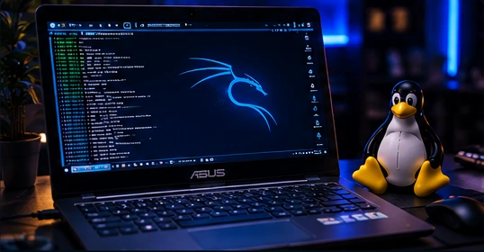

Segurança não é sorte.
É método.
Entre nos bastidores da defesa cibernética. Explore Linux, investigações, histórias que marcaram a internet e o raciocínio de um analista SOC.
Escolha sua próxima descoberta.
Conteúdo acessível para começar, com profundidade para continuar.
Domine o terminal
do Kali Linux.
Do primeiro comando à leitura de informações do sistema.
Explorar módulo ↗02 / INVESTIGAÇÃOPense como um
analista SOC.
Aprenda a analisar sinais e separar hipóteses de evidências.
Iniciar simulação ↗03 / HISTÓRIAIncidentes que
mudaram tudo.
Casos históricos, impactos e as lições que permanecem.
Ver histórias ↗
Ferramentas não fazem um especialista.
Método faz.
Estudar segurança vai além de abrir um terminal. É definir um objetivo, conhecer os limites do teste, registrar evidências e explicar o que os dados realmente demonstram.
- Ambiente próprio ou autorizado
- Hipóteses e evidências verificáveis
- Defesa, ética e documentação
Expanda seu repertório.
Um acervo em construção, organizado por fundamentos, ferramentas e defesa.
Terminal Kali: 11 comandos essenciais
Um guia prático de inspeção local com comandos seguros.
9 min de leituraDefesa/ 09Como investigar um alerta de SOC
Simulação e checklist da triagem inicial de um analista.
10 min de leituraHistória/ 11Casos que mudaram a cibersegurança
Morris Worm, ILOVEYOU, Stuxnet, WannaCry e aprendizados.
11 min de leituraPor trás das telas, curiosidade.
Um estudante, um laboratório e a decisão de transformar aprendizado em conteúdo público e responsável. Conheça quem desenvolve o Mini SOC Lab e a trajetória por trás do projeto.
Conhecer o criador ↗